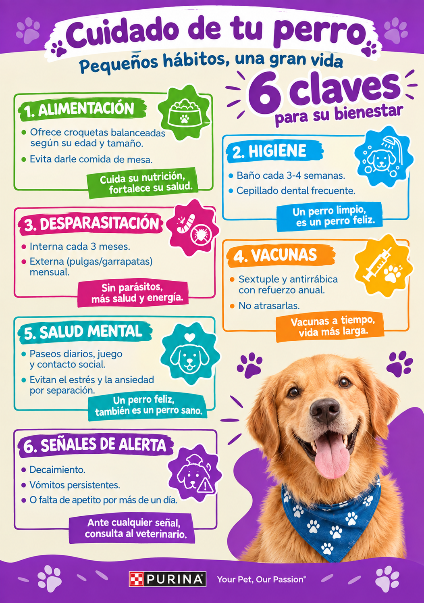
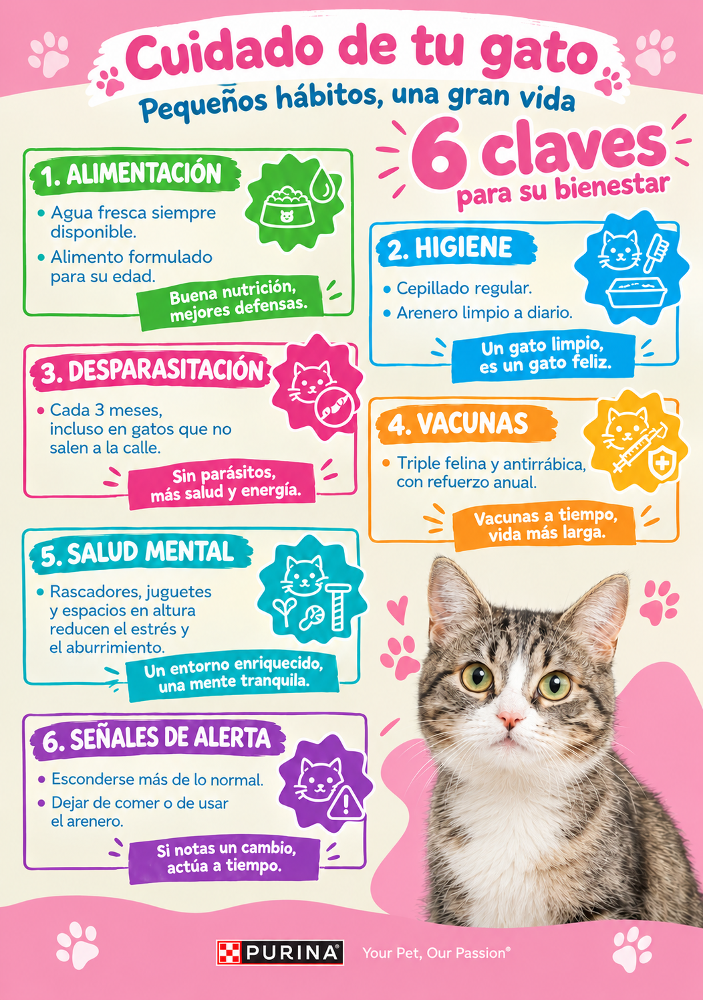
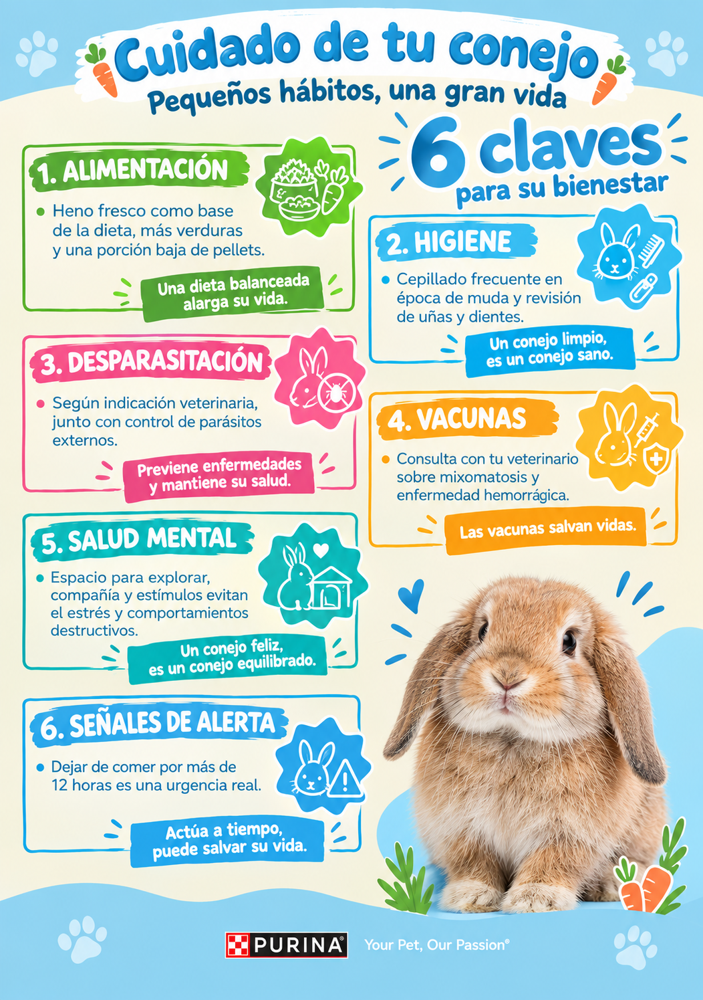
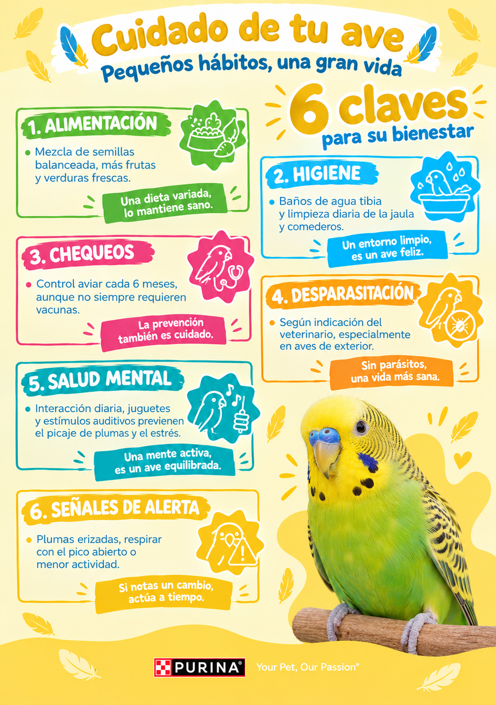

🐾 Tus mascotas
Todo sobre tus mascotas en un solo lugar
Revisa las mascotas que has registrado y accede a su información clínica, controles, vacunas e historial cuando lo necesites.
Ver mis mascotas
Su información siempre a tu alcance

♡
🐾
Tus mascotas
Mascotas registradas
Aquí encontrarás las mascotas asociadas a tu cuenta. Revisa su ficha clínica, historial, vacunas y controles.
Filtrar por
Guía rápida
Cuidados básicos por especie
Algunas recomendaciones generales para mantener a tu mascota sana entre visita y visita



Guía rápida
Cómo cuidamos a tu mascota
Conoce un poco más sobre nuestra rutina de control, vacunación y seguimiento clínico.
✓
Control preventivo
✓
Vacunación
✓
Seguimiento clínico